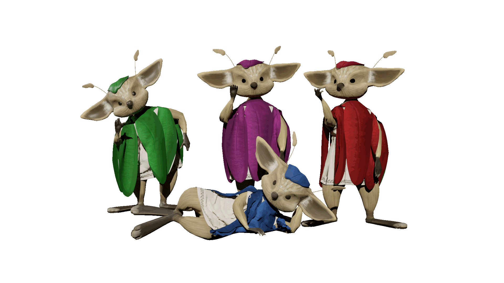
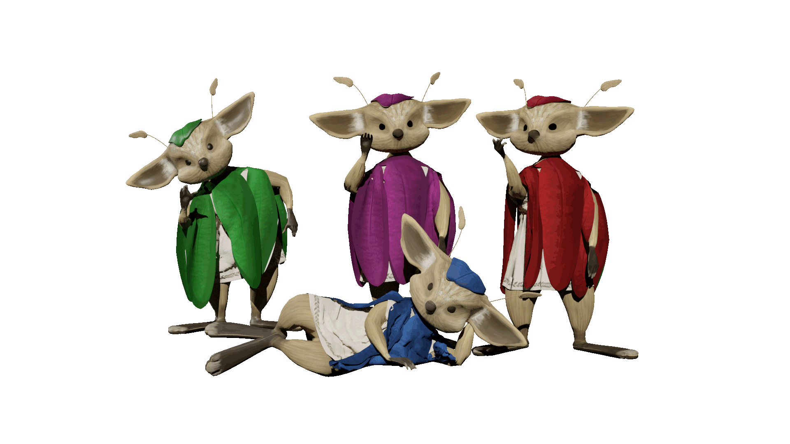

Ostara
Ostara est un jeux immersif et coopératif dont l'objetif est de sensibilisé aux conséquences de la migration climatique. Incarnez un groupe Sulimo à la recherche d'une nouvelle terre fertile. Surmontez les obstacles sur votre chemin et prenez les bonnes décisions pour atteindre votre destination finale : Ostara.
La mécanique de jeu repose sur un écran principal et chaque joueur possédant son portable, afin de controler son personnage. Le jeu fait appel à la coopération des joueurs au sein de celui-ci mais aussi à travers des actions physiques réelles. Afin d'accentuer la coopération entre les joueurs, ceux-ci peuvent s'échanger diverses ressources et chacun possède un accès à des informations particulières


 

Projet réalisé avec : Saana Malek (designer), Chloé Sans (developpeuse) et Yann Chatbot Thomas (développeur)
Formation : Bachelor Designer Interactif aux Gobelins, Paris
Année : 2020
Fermer